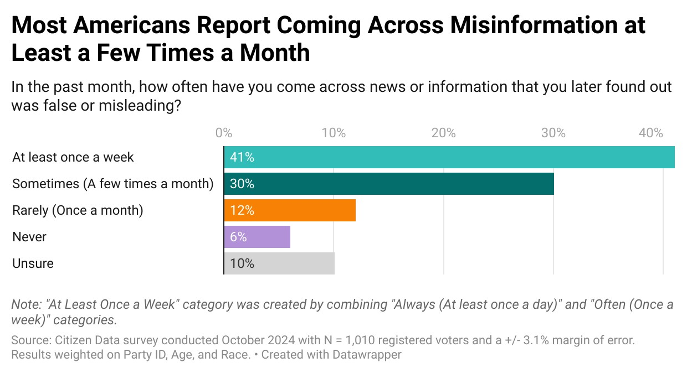
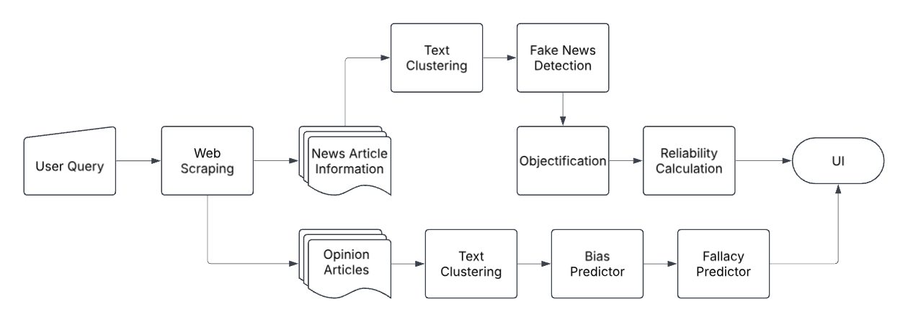

Alitheia AI - Objectifying News
The status quo of misinformation
Misinformation has always been a historical issue, whether it be in the era of the Greeks or the Dark ages. However, with growing access to technology and information, access to misinformation has also been amplified. This issue is worsened by the fact technology has made it much harder to distinguish between fact and fiction, resulting in even more confusion.

According to a survey done by Citizen Data in 2024, at least 83% of individuals have reported seeing some form of misinformation, with another 10% being unsure whether they've seen misinformation.
Furthermore, misinformation can have devastating consequences, both on a societal and individual level. It can fuel distrust in institutions, manipulate public opinion, and lead to harmful decision-making. On a societal scale, it can undermine democracy, incite violence, and exacerbate divisions by spreading false narratives that polarize communities.
Alitheia AI and its solution
Alitheia AI presents a novel solution to providing unbiased and reliable news by implementing a full pipeline with AI elements to find, categorize, and objectify news.

The process begins by collecting news articles and opinion pieces from various sources using information retrieval techniques. The system employs a combination of web scraping and API-based retrieval (e.g., Google News API, Bing News API, and NewsAPI) to ensure a diverse range of perspectives. Additionally, sources are filtered and ranked based on reliability metrics, ensuring that high-quality sources are prioritized.
Once the articles are collected, textual clustering is applied. This step groups articles based on their core arguments rather than just keywords. Using sentence embeddings and unsupervised clustering methods like HDBSCAN, the system ensures that similar articles are categorized together, allowing for an organized and comparative analysis of different perspectives on the same topic.
Next, the fake news detection module is applied. This is powered by a CNN-LSTM model trained on datasets such as LIAR, ISOT, and other benchmarked fake news datasets. By leveraging deep learning architectures, the system assigns a confidence score to each article, indicating the probability of misinformation.
To further enhance objectivity, the system incorporates an objectification and bias removal step. This involves rule-based NLP processing to eliminate highly emotive language and biased phrasing without altering the core meaning of the text. Additionally, a fine-tuned BART-based summarization model is tested to further refine objectivity by rephrasing articles in a neutral tone.
Once bias is mitigated, the reliability calculation module assesses the trustworthiness of each article based on source credibility, objectivity scores, and historical accuracy of the outlet. A weighted scoring system ensures that highly reliable articles receive higher prominence.
Simultaneously, the opinion extraction step identifies editorialized content and logical fallacies in opinion articles. A zero-shot classification model (BART-based) is used to distinguish news, opinions, and facts, while a fallacy detection model flags arguments containing logical inconsistencies.
Finally, all processed information is presented through an interactive user interface. Users can explore articles categorized by topic clusters, compare different perspectives, and examine reliability breakdowns for each piece of news. Transparency features, such as an explanation panel for AI-generated scores, enhance trust in the system.
Through this multi-stage pipeline, Alitheia AI aims to empower users with factual, unbiased, and objective news, ensuring that misinformation and bias no longer distort the truth.
You can try this program out here: https://objectivenews.streamlit.app/
Innovations
Alitheia AI includes some novel key improvements when compared to previous methods of objectifying news:
- It collects news from diverse sources to ensure a comprehensive perspective
- It groups similar points of information within articles together for easy reading using innovative techniques like context and untrained self-attention
- It uses a novel rule-based method to objectify text with NLP
- It creates a dynamic reliability score to avoid the binary choice of "fact" and "fiction"
Conclusion
Alitheia AI is dedicated to improving the way we consume information. By leveraging AI to remove bias, detect misinformation, and provide transparency, my final goal is to give users the tools needed to navigate today's world of misinformation with a little more trust. Cheers!